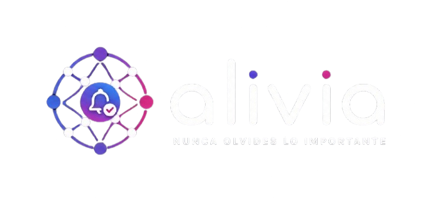

Las tasas de interes afectan el costo del credito para financiar el desarrollo y la capacidad de gasto del consumidor en suscripciones premium. En un entorno de tasas altas, los clientes potenciales reducen su gasto discrecional y la conversion de usuarios gratuitos a premium se vuelve mas lenta.
La expansion a Latinoamerica y otros mercados expone al proyecto a fluctuaciones cambiarias. Los ingresos por suscripciones internacionales y los costos de infraestructura pagados en dolares se ven afectados por la volatilidad de las monedas locales frente al dolar.
El acceso a financiamiento (inversionistas angeles, capital de riesgo, credito bancario) condiciona la velocidad de desarrollo y la capacidad de escalar la plataforma. La disponibilidad de credito depende de las condiciones del mercado financiero, fuera del control del proyecto.
Aplicaciones consolidadas como Todoist, Trello, Google Keep, Notion y Any.do ofrecen funcionalidades genericas de gestion de tareas. La rivalidad en el sector es alta y las grandes plataformas pueden copiar funcionalidades rapidamente. Alivia se diferencia por su enfoque integral en las multiples areas de la vida adulta.
El mercado global de aplicaciones de productividad crece alrededor del 14% anual y se proyecta que supere los 8 mil millones de dolares hacia 2028. Es un sector atractivo con tendencia creciente, pero con alta rivalidad y expectativas de los usuarios en constante evolucion.
Adultos de 25 a 55 anos economicamente activos en Mexico y Latinoamerica, con agendas saturadas y multiples roles simultaneos. Es un segmento con alta necesidad de organizacion, pero sensible al precio y con preferencias cambiantes segun tendencias tecnologicas y habitos de consumo.
La cultura latinoamericana esta orientada a la familia y la comunidad, lo que genera una mayor cantidad de compromisos sociales que requieren organizacion. Existe alta disposicion a herramientas de apoyo, pero preferencia por aplicaciones en espanol, intuitivas y adaptadas a la realidad local.
El proyecto debe cumplir con regulaciones de proteccion de datos como la LFPDPPP en Mexico, la LGPD en Brasil y el GDPR de la Union Europea para expansion internacional. Los cambios legislativos pueden exigir ajustes en politicas de privacidad, almacenamiento y manejo de informacion sensible.
Pandemias, crisis economicas, disrupciones tecnologicas o cambios en habitos de consumo pueden alterar la demanda. La pandemia de COVID-19 acelero la digitalizacion e impulso el uso de aplicaciones de productividad, demostrando que los eventos externos pueden favorecer o perjudicar al proyecto.
Eventos naturales o fallas de infraestructura pueden afectar la continuidad del servicio en la nube y la conectividad de los usuarios. Desastres naturales en regiones donde operan los centros de datos o en las zonas de los usuarios pueden interrumpir temporalmente el acceso a la plataforma.
Gestion del flujo de caja para cubrir costos operativos (servidores, desarrollo, marketing) mientras maduran los ingresos recurrentes por suscripciones. Una administracion prudente de la tesoreria permite sostener el proyecto durante la etapa de crecimiento sin quiebres financieros.
Combinacion de recursos propios, inversion inicial y reinversion de los ingresos premium para sostener el crecimiento. El equipo decide la estructura de financiacion, evitando una dependencia excesiva del capital externo y sus condiciones.
El modelo de suscripcion mensual o anual y la disponibilidad de medios de pago locales (tarjetas, transferencias, puntos de venta) facilitan la conversion de usuarios gratuitos a premium. El proyecto controla las condiciones comerciales y los plazos de cobro.
Desarrollo continuo de funcionalidades diferenciadoras como recordatorios inteligentes, priorizacion automatica de notificaciones y modulos especializados por area de la vida. La inversion en investigacion, desarrollo e innovacion es una decision interna del equipo.
Capacitacion del equipo en metodologias agiles, desarrollo movil y web, diseno de experiencia de usuario y nuevas tecnologias. La formacion continua es una decision interna que fortalece las capacidades del equipo y la calidad del producto.
Conocimiento acumulado del equipo sobre las necesidades del mercado latinoamericano, la experiencia de usuario y la marca Alivia como propuesta de valor unica. La gestion y proteccion de este capital (codigo fuente, metodologias, marca) esta bajo control del proyecto.
Posibles alianzas estrategicas o acuerdos de integracion con otras plataformas (calendarios, servicios financieros, sistemas de salud) para ampliar funcionalidades y alcance. La decision de asociarse o fusionarse es del equipo del proyecto.
Dependencia del equipo fundador y de los desarrolladores clave. La rotacion o perdida de personal critico puede retrasar el plan de trabajo. La gestion del talento, la cultura organizacional y los incentivos son decisiones internas.
Calidad del software, control de errores, tiempos de respuesta del servidor y disponibilidad de la plataforma. La reputacion del producto depende de la estabilidad, y su calidad esta totalmente bajo el control del equipo de desarrollo.
Infraestructura tecnologica, equipos de desarrollo, propiedad intelectual del codigo fuente y de la marca. La administracion, mantenimiento y renovacion de los activos son responsabilidades internas del proyecto.
Disponibilidad de la aplicacion en tiendas digitales (App Store, Google Play) y en la web. Aunque las politicas de las plataformas son externas, el proyecto controla la distribucion propia a traves de la web y la promocion directa de descarga.
Atraccion y retencion de talento en desarrollo, diseno y marketing para el crecimiento del equipo. Las politicas de contratacion, los perfiles buscados y las condiciones laborales son decisiones internas del proyecto.
Proveedores de servicios en la nube, herramientas de desarrollo y servicios externos. El proyecto controla la seleccion de proveedores, la negociacion de contratos y la diversificacion para reducir dependencias.
Comunicacion clara con los usuarios sobre precios, uso de datos y cambios en el producto. La transparencia genera confianza y fidelidad, y su nivel esta determinado por las politicas internas de comunicacion.
Compromiso con la responsabilidad social corporativa: accesibilidad para adultos mayores, practicas eticas en el manejo de datos y contribucion al bienestar de la comunidad. Las iniciativas de RSC son decisiones voluntarias del proyecto.
| # | Riesgo | Tipo | Probabilidad | Impacto | Nivel | Mitigacion |
|---|---|---|---|---|---|---|
| 1 | Fuga de datos personales de usuarios | Externo | Baja | Muy Alto | Critico | Cifrado de extremo a extremo, autenticacion de dos factores, cumplimiento de la LFPDPPP, auditorias de seguridad periodicas y plan de respuesta a incidentes. |
| 2 | Alta competencia de aplicaciones consolidadas | Externo | Alta | Alto | Alto | Diferenciacion por enfoque integral en la vida adulta, orientacion al nicho latinoamericano, mejora continua de funcionalidades y posicionamiento de marca. |
| 3 | Baja adopcion o desercion de usuarios | Externo | Media | Alto | Alto | Pruebas piloto, diseno de experiencia de usuario centrado en el cliente, estrategia de marketing digital y version gratuita que reduzca la barrera de entrada. |
| 4 | Cambios en las tasas de interes | Externo | Media | Medio | Medio | Financiacion diversificada, modelo freemium con ingresos recurrentes y plan de gastos prudente que reduzca la dependencia del credito externo. |
| 5 | Fluctuacion del tipo de cambio | Externo | Baja | Medio | Bajo | Precios ajustados a monedas locales, reserva financiera en moneda fuerte y negociacion de contratos de infraestructura en moneda local cuando sea posible. |
| 6 | Cambios regulatorios en proteccion de datos | Externo | Media | Alto | Alto | Asesoria legal continua, politicas de privacidad actualizadas, cumplimiento proactivo de normativas locales e internacionales y designacion de responsable de proteccion de datos. |
| 7 | Fallas tecnicas o errores en la plataforma | Interno | Media | Alto | Alto | Integracion y despliegue continuos (CI/CD), pruebas automatizadas, monitoreo de disponibilidad y tiempos de respuesta, y plan de respuesta a incidentes. |
| 8 | Fuga de talento clave del equipo | Interno | Baja | Alto | Medio | Cultura organizacional solida, incentivos y beneficios, documentacion del conocimiento y plan de sucesion para roles criticos. |
| 9 | Insuficiente flujo de caja | Interno | Media | Alto | Alto | Control estricto de gastos, reinversion de ingresos premium, proyecciones financieras mensuales y linea de financiacion de contingencia. |
| 10 | Dependencia de plataformas de distribucion | Externo | Media | Medio | Medio | Distribucion web propia y aplicacion web progresiva (PWA), campanas de descarga directa y reduccion de la dependencia de las tiendas de aplicaciones. |
| 11 | Ataques de ciberseguridad | Externo | Media | Alto | Alto | Firewalls y protecciones de red, monitoreo de intrusiones, copias de seguridad periodicas y protocolos de respuesta a incidentes de seguridad. |
| 12 | Problemas con proveedores de servicios en la nube | Externo | Baja | Medio | Bajo | Contratos con acuerdos de nivel de servicio (SLA), redundancia en multiples regiones, copias de seguridad distribuidas y proveedores alternativos. |